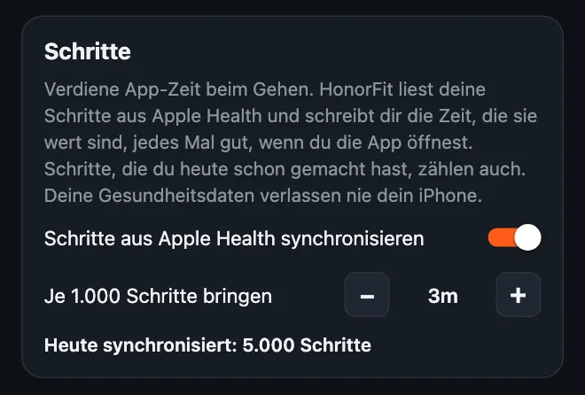
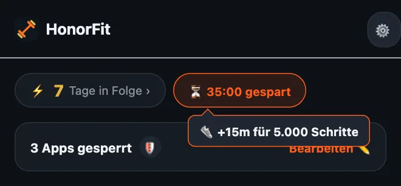

Deine Schritte bringen jetzt Bildschirmzeit
Hallo zusammen! Kurz was zur neuesten Funktion in HonorFit, und die kam direkt aus einer Mail von einem Nutzer. HonorFit ist der App-Blocker, bei dem du dir deine Bildschirmzeit mit Liegestützen verdienst (oder Kniebeugen, Kegel-Übungen oder was immer du auswählst), nach dem Ehrensystem. Keine Kamera.
Ein Nutzer hat gefragt: Mein Handy zählt doch sowieso schon meine Schritte, warum bringen die nicht auch Zeit? Gute Frage. Jetzt tun sie es. HonorFit kann deine Schritte aus Apple Health auf dem iPhone oder aus Health Connect auf Android lesen und automatisch in App-Zeit umwandeln.
So schaltest du es ein
- Aktualisiere HonorFit auf 1.18.0 oder neuer.
- Tippe auf dem Startbildschirm auf das Zahnrad und such die Karte Schritte.
- Schalte Schritte aus Apple Health synchronisieren (iPhone) oder Schritte aus Health Connect synchronisieren (Android) ein.
- Erlaube Schritte, wenn dein Handy fragt. HonorFit fragt nur, ob es Schritte lesen darf. Sonst nichts.
Das war’s. Die Schritte, die du heute schon gemacht hast, zählen sofort, und unter dem Schalter siehst du „Heute synchronisiert“ mit deiner Schrittzahl.

Auf Android brauchst du Health Connect, das ab Android 14 eingebaut ist. Auf älteren Handys schickt dich HonorFit zu Google Play, damit du es installieren kannst. Außerdem brauchst du etwas, das Schritte in Health Connect einträgt, zum Beispiel Google Fit, Samsung Health oder Fitbit. Nur weil dein Handy irgendwo Schritte zählt, heißt das nicht immer, dass es sie auch teilt.
Wie viel Zeit bringen Schritte?
Standardmäßig bringen je 1.000 Schritte 3 Minuten. Das kannst du direkt unter dem Schalter ändern, von einem Bruchteil einer Sekunde bis so viel du willst.
| Schritte | Bei 3 Min. pro 1.000 (Standard) | Bei 5 Min. pro 1.000 |
|---|---|---|
| 2.000 (ungefähr 20 Minuten Spaziergang) | 6 Minuten | 10 Minuten |
| 5.000 | 15 Minuten | 25 Minuten |
| 10.000 | 30 Minuten | 50 Minuten |
So würde ich wählen: Bei einem gemütlichen Spaziergang machst du ungefähr 100 Schritte pro Minute, mal mehr, mal weniger. Wenn du eine Zeit-Übung Spazieren mit ihrem Standardwert von 30 Sekunden pro Minute eingerichtet hast, sind etwa 5 Minuten pro 1.000 Schritte ungefähr gleich viel wert wie deine eingetragenen Spaziergänge. Wenn du sowieso viel gehst (Hund, Arbeitsweg, Job auf den Beinen), stell es niedriger ein, damit deine Apps nicht jeden Tag einfach umsonst entsperrt werden.
Wann tauchen die Schritte auf?
Jedes Mal, wenn du HonorFit öffnest. Auch, wenn du es vom Sperrbildschirm aus öffnest, weil einer gesperrten App die Zeit ausgegangen ist. HonorFit liest deine Tagessumme, schreibt dir die Schritte seit dem letzten Mal gut und zeigt auf dem Startbildschirm ein kleines „👟 +15m für 5.000 Schritte“.

Der Trick ist also: Geh spazieren, öffne danach HonorFit, und deine Zeit ist da. Für dieselben Schritte bekommst du nie zweimal Zeit. Wenn die letzte Synchronisierung gestern war, werden die Schritte von gestern Abend zuerst noch gestern gutgeschrieben. Ist „Um Mitternacht zurücksetzen“ an, tauchen diese späten Schritte zwar in der Statistik von gestern auf, bringen heute aber keine Zeit, weil das Guthaben von gestern schon zurückgesetzt ist.
HonorFit liest deine Schritte nicht im Hintergrund, sondern nur, wenn du die App öffnest. Deinen Schrittverlauf findest du unter Verlauf in einer eigenen Ansicht Schritte.
Ist das kostenlos?
Ja, der Schritt-Sync ist kostenlos, und es gibt keine Obergrenze für Schritte. Es gilt nur das übliche Limit der kostenlosen Version: Kostenlos sparst du bis zu 2 Stunden App-Zeit an. Ist dein Guthaben voll, werden weitere Schritte nicht übertragen. Mit Pro (in den USA 3 $ im Monat oder einmalig 19,99 $) sparst du unbegrenzt Zeit an.
Noch zwei Kleinigkeiten: Der Hart-Modus und der Krank-Modus ändern nur, was deine Wiederholungen wert sind, nicht deine Schritte. Und Schritte zählen nicht als Workout für deine Serie. Dafür musst du ein paar Wiederholungen machen.
Ein Hinweis zum Ehrensystem: Wenn du einen Spaziergang als Zeit-Übung einträgst und deine Schritte synchronisierst, wirst du für denselben Spaziergang doppelt bezahlt. Niemand hält dich auf, aber entscheide dich für eins. Mein Vorschlag: Lass die Schritte das Herumlaufen im Alltag abdecken und trag Workouts für echte Workouts ein.
Du siehst 0 Schritte?
- iPhone: iOS sagt Apps nie, ob du das Lesen von Schritten abgelehnt hast. Es liefert einfach null. Öffne die Health-App, tippe auf dein Profilbild, dann auf Apps → HonorFit, und aktiviere Schritte.
- Android: Öffne Health Connect (die Karte Schritte in HonorFit zeigt einen Button Health Connect öffnen, wenn sie keine Schritte findet) und prüf, ob HonorFit Schritte lesen darf. Prüf dann, ob deine Schritte-App, etwa Google Fit, Samsung Health oder Fitbit, Schritte in Health Connect einträgt.
- Geh danach zurück zu HonorFit. Es prüft erneut, sobald du wieder in den Einstellungen bist.
Und meine Gesundheitsdaten?
HonorFit liest genau eine Sache: deine Schrittzahl. Es schreibt nie etwas in Apple Health oder Health Connect, und die Zahl verlässt nie dein Handy. Es gibt kein Konto und keinen Server, an den sie gehen könnte. Alle Details stehen in der Datenschutzerklärung (auf Englisch).
Wenn du Ideen wie diese hast: Die Support-Seite (auf Englisch) landet direkt in meinem Postfach. Diese ganze Funktion gibt es nur, weil jemand geschrieben hat.
HonorFit Blocker ist ein kostenloser App-Blocker für iPhone und Android. Verdien dir Bildschirmzeit mit Liegestützen, jeder Übung, die du willst, und jetzt auch mit deinen Schritten. Ehrensystem, keine Kamera, nichts verlässt dein Handy.